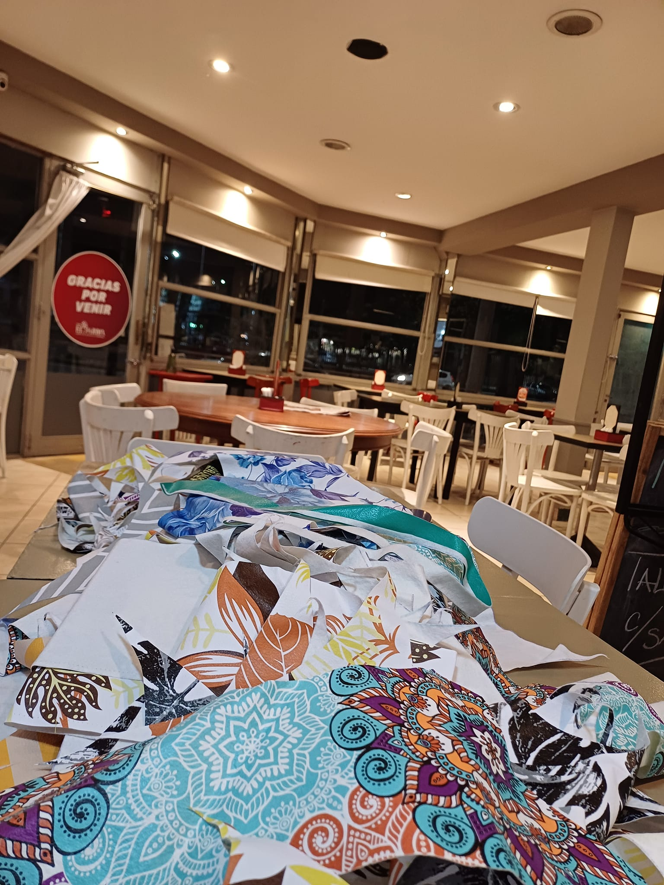

"Desde hace más de cinco años, nuestro querido bar ha sido un punto de encuentro querido por locales y visitantes por igual. Aquí, la calidez de nuestras puertas abiertas se combina con el aroma de café fresco y el murmullo de conversaciones animadas. Nos enorgullece ofrecer un espacio donde cada persona que cruza nuestras puertas se sienta acogida y parte de nuestra familia."
"En nuestro establecimiento, nos enorgullece contar con nuestra propia producción de alimentos para desayunos, almuerzos, meriendas y cenas. Desde ingredientes frescos y locales hasta platos cuidadosamente preparados, cada comida que servimos es una expresión de nuestro compromiso con la calidad y la satisfacción de nuestros clientes. Ya sea que estés buscando empezar el día con un desayuno reconfortante, disfrutar de un almuerzo sabroso o compartir una merienda relajante, estamos aquí para ofrecerte una experiencia gastronómica única y memorable."
"En nuestro bar, cada encuentro se convierte en una celebración inolvidable. Aquí, los buenos amigos se reúnen para compartir risas, historias y momentos únicos. La calidez de nuestra atmósfera y la calidad de nuestro servicio crean el ambiente perfecto para festejar y disfrutar. Ven y descubre por qué nuestro bar es el lugar preferido para crear recuerdos junto a personas especiales. ¡Te esperamos para levantar tu copa y celebrar la vida"